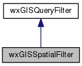
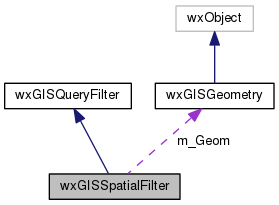

|
|
Version: 0.6.0 |


wxGISSpatialFilter Class Reference
Inheritance diagram for wxGISSpatialFilter:

Collaboration diagram for wxGISSpatialFilter:

Public Member Functions | |
| wxGISSpatialFilter (const wxGISGeometry &Geom, const wxString &sWhereClause=wxEmptyString) | |
| wxGISSpatialFilter & | operator= (const wxGISSpatialFilter &obj) |
| wxGISSpatialFilter (const wxGISSpatialFilter &obj) | |
| virtual void | SetEnvelope (double dfMinX, double dfMinY, double dfMaxX, double dfMaxY) |
| virtual void | SetEnvelope (const OGREnvelope &Env) |
| virtual void | SetGeometry (const wxGISGeometry &Geom) |
| virtual OGREnvelope | GetEnvelope (void) |
| virtual wxGISGeometry | GetGeometry (void) const |
 Public Member Functions inherited from wxGISQueryFilter Public Member Functions inherited from wxGISQueryFilter | |
| wxGISQueryFilter (const wxString &sWhereClause) | |
| wxGISQueryFilter & | operator= (const wxGISQueryFilter &obj) |
| wxGISQueryFilter (const wxGISQueryFilter &obj) | |
| virtual void | SetWhereClause (wxString sWhereClause) |
| virtual wxString | GetWhereClause (void) const |
Protected Attributes | |
| wxGISGeometry | m_Geom |
| Protected Attributes inherited from wxGISQueryFilter | |
| wxString | m_sWhereClause |
The documentation for this class was generated from the following files:
- /home/bishop/work/projects/nextgismanager/include/wxgis/datasource/filter.h
- /home/bishop/work/projects/nextgismanager/src/datasource/filter.cpp
- Generated on Fri Sep 26 2014 01:11:02 for ngm by
 1.8.6
1.8.6